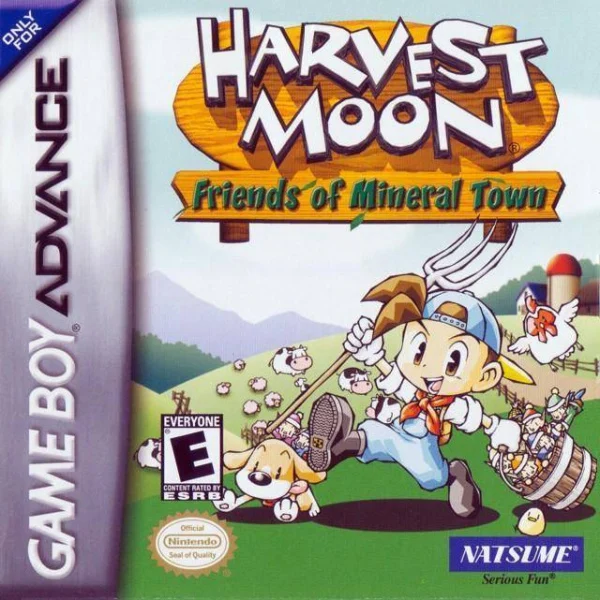

|  |
MENSAGEM #01 |
Olá! Navegue pelas capas dos jogos para acessar o seu guia. Os jogos estão organizados por data do primeiro Harvest lançado até o útlimo de cima para baixo! Espero que seja útil pra vocês! Tenham |
MENSAGEM #00 |
Por favor pessoal se o site ajudou vocês e puderem doar, façam uma doação! Ajude-me a comprar um suquinho! Obrigado desde já! |